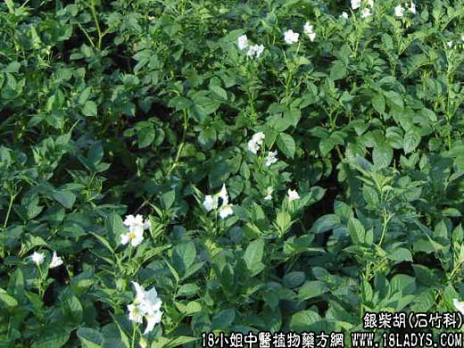

【中药概述】
银柴胡为石竹科草本植物银柴胡的根。甘，微寒。归肾、胃经。
1．骨蒸劳热：用于阴虚火旺而发热，症见下午潮热，手足心热，心烦口渴，面黄白而颧红，盗汗证，如（清骨散）。
2．疳积发热：用于小儿因消化不良、虫积而腹大腹胀、面黄肌瘦、毛发憔悴、低热或下午及夜间发热以胁腹部发热为明显者，可配地骨皮，胡黄连，山楂，神曲，麦芽，使君子，槟榔，鸡内
金等。如（<证治准绳>柴胡清肝汤）、（<温病指归>银甲散）。
【药效鉴别】
银柴胡为清虚热发除骨蒸，除疳热的常用药。“退热而不苦泄，理阴而不升腾，固虚热之良药”。
【药理作用】
银柴胡中三萜皂甙对冠状动脉硬化可降低胆固醇浓度、降低血脂浓度。
【用量用法】
10——20g，水煎服，或入丸、散剂。
【使用注意】
外感风寒，血虚无热者不宜。
【化学成分】
含精油（ESS.OLL），维生素A及多量鞣质等。